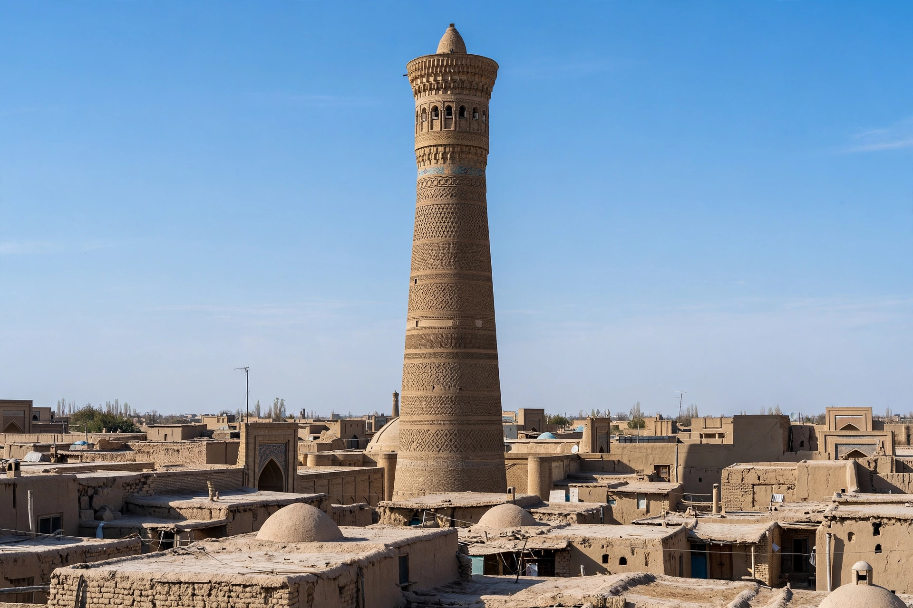

| Kalyan Minaret | |
 | |
| Location | Bukhara, Uzbekistan |
|---|---|
| Built | 1127 CE |
| Commissioned by | Arslan Khan, Karakhanid ruler |
| Height | ≈ 45.6–48 m |
| Part of | Po-i-Kalyan complex; Historic Centre of Bukhara (UNESCO World Heritage Site) |
The Kalyan Minaret (Uzbek: Minorai Kalon, "Great Minaret") is a minaret of the Po-i-Kalyan mosque complex in Bukhara, Uzbekistan, and one of the most prominent landmarks of the city. Built in 1127 by the Karakhanid ruler Arslan Khan, it towers over the historic centre and is famed for its baked-brick construction and rich patterned ornamentation.
According to inscriptions and tradition, the minaret was erected in 1127 under Mohammad Arslan Khan, the Karakhanid ruler of Bukhara, on the site of an earlier minaret that had collapsed. The architect's name is recorded as Bako (Usto Bako). Standing at the corner of the Friday mosque, it served the call to prayer, a lookout, and a landmark for caravans — a beacon visible across the desert approaches to the Silk Road city.
Legend holds that when Genghis Khan captured Bukhara in 1220 and ordered the city destroyed, he was so struck by the minaret that he spared it. In later centuries the tower acquired a grim reputation as the "Tower of Death": into the early twentieth century, criminals sentenced to death were reportedly thrown from its top. The minaret survived earthquakes that damaged much of the old city, and it was restored in the Soviet and post-independence periods.
The minaret is a tapering cylindrical tower of baked brick, approximately 45.6 metres tall (some sources give 48 m including its base), with a diameter of about 9 metres at the bottom narrowing to about 6 metres at the top. Its shaft is divided into horizontal bands of distinct brick patterns — geometric, vegetal, and epigraphic designs in relief — giving the surface a woven, textile-like quality characteristic of Karakhanid brickwork. Near the top, a ring of muqarnas supports an arched lantern rotunda with sixteen windows, from which the muezzin called the faithful to prayer.
An internal spiral staircase of over one hundred steps climbs to the rotunda. The minaret is joined to the Kalyan Mosque by a small bridge from the mosque's roof. Together with the mosque (rebuilt in 1514) and the Mir-i-Arab Madrasa (1535–1536) opposite, it forms the Po-i-Kalyan ensemble at the heart of the historic centre of Bukhara, inscribed by UNESCO as a World Heritage Site in 1993.
See also: Bukhara, Po-i-Kalyan, Minaret, Karakhanids